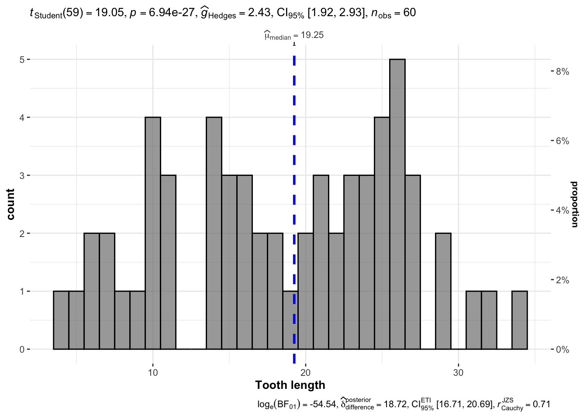

Chapter 2 Descriptive analytics
通常, 数据科学的源头是业务问题或者业务目标, 我们首先你要做的是弄清楚我们的目标是什么, 我们需要解决什么问题, 这是至关重要的. 弄清楚这个问题之后, 我们需要来看数据, 巧妇难为无米之炊 , 数据是分析挖掘的原材料, 我们需要弄清楚我们有哪些数据可以用, 这些数据的数据质量如何, 数据能不能用 , 我们需要将各种能用的数据整合起来.
接下来, 我们需要进行分析了, 分析数据的第一步, 是看数据的分布.数据的分布指的是数据在整个取值范围内的分布情况，即不同数值的频率或概率分布。数据的分布可以描述数据的集中趋势、离散程度以及可能存在的异常值等信息，对于数据分析和统计推断至关重要。数据的分布通常通过统计图表或数学函数来表示和描述。 也就是说, 对于连续变量, 我们可以可以先绘制一下数据的分布图, 对于离散变量, 可以先查看各个离散值的数量.
2.1 ggstatsplot
这里首先推荐ggstatsplot 包, ggstatsplot 是 ggplot2 包的一个扩展。这个包主要用于在图形中添加丰富的统计信息。在数据探索过 程中，数据可视化可统计分析建模常常是两个过程，可视化可以为建模提供某些洞见，而建模的结果会 建议使用不同的可视化方法。ggstatsplot 这个包可以将这两个过程合并起来，绘制统计信息更加丰富的图 形，使得数据探索过程更加的简单。
## You can cite this package as:
## Patil, I. (2021). Visualizations with statistical details: The 'ggstatsplot' approach.
## Journal of Open Source Software, 6(61), 3167, doi:10.21105/joss.03167p <- gghistostats(
data = ToothGrowth,
x = len,
xlab = "Tooth length",
centrality.type = "np"
,binwidth = 1
)
p 
2.2 crosstable
如果数据是离散, 则可以使用crosstable包查看各个取值的情况.
## # A tibble: 3 × 4
## .id label variable value
## <chr> <chr> <chr> <chr>
## 1 Species Species setosa 50 (33.33%)
## 2 Species Species versicolor 50 (33.33%)
## 3 Species Species virginica 50 (33.33%)必须要注意的是: 拿到数据的第一步就是查看数据的分布.
其他的工具就是其他各种统计指标, 其他各种统计图形.